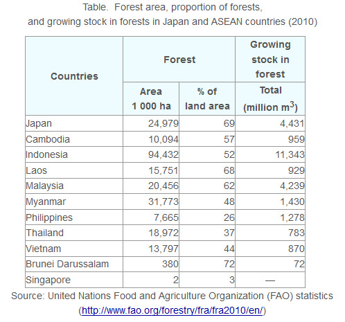
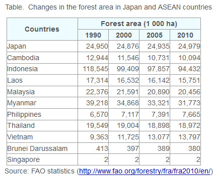
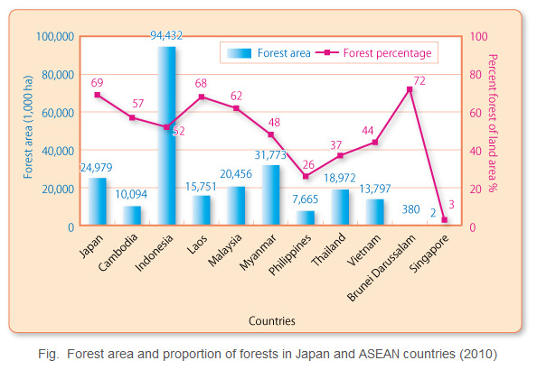
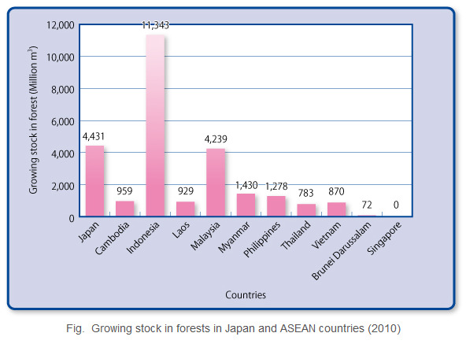
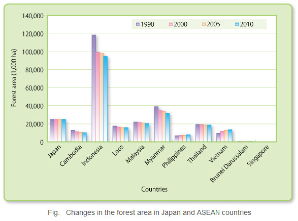

The Association of South-East Asian Nations (ASEAN) is a regional cooperation organization composed of ten countries from the South-East Asian region, which have been experiencing rapid economic development. The region is situated in a tropical zone, and has the capacity to produce large quantities of biomass all year round. Woody biomass from forests constitutes a particularly valuable source of energy in the form of domestic fuel for local residents.
The forest area, percentage of land area accounted for by forests, and growing stock in forests (volume of trees comprising forests) have been indicated in the tables and figures for the ASEAN countries of Cambodia, Indonesia, Laos, Malaysia, Myanmar, the Philippines, Thailand, Vietnam, Brunei Darussalam, Singapore and Japan.
Forests provide us with shelter, livelihoods, water, food and fuel security. All these activities directly or indirectly involve forests. Some are easy to figure out - fruits, paper and wood from trees, and so on. Others are less obvious, such as by-products that go into everyday items like medicines, cosmetics and detergents.
- The percentage of forests making up the national territory of Japan is high at 69%, and the country is well-endowed with forest resources.
- Out of the ASEAN countries Indonesia has the most extensive forest area, as well as abundant growing stock in forests.
- But it is also the country with the largest decline in its forest area. Large swaths of forest continue to be felled, and over the past 20 years the forests have decreased by about 24,113 (thousand ha), which is comparable to the forest area of Japan.
- Forests continue to decline in countries other than the Philippines and Vietnam.





Source: https://www.asiabiomass.jp/english/topics/1111_04.html